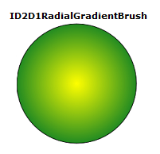

To create a radial gradient brush, use the ID2DRenderTarget::CreateRadialGradientBrush method and specify the radial gradient brush properties and the gradient stop collection. Some overloads enable you to specify the brush properties. The following code shows how to create a radial gradient brush to fill a circle, and a solid black brush to draw the outline of the circle.
The code produces the output shown in the following illustration.

Declare a variable of type ID2D1RadialGradientBrush.
ID2D1RadialGradientBrush *m_pRadialGradientBrush;
Create an array of D2D1_GRADIENT_STOP structures to put in the gradient stop collection. The D2D1_GRADIENT_STOP structure contains the position and color of a gradient stop. The position indicates the relative position of the gradient stop in the brush. The value is in the range [0.0f, 1.0f], as shown in the following code.
// Create an array of gradient stops to put in the gradient stop
// collection that will be used in the gradient brush.
ID2D1GradientStopCollection *pGradientStops = NULL;
D2D1_GRADIENT_STOP gradientStops[2];
gradientStops[0].color = D2D1::ColorF(D2D1::ColorF::Yellow, 1);
gradientStops[0].position = 0.0f;
gradientStops[1].color = D2D1::ColorF(D2D1::ColorF::ForestGreen, 1);
gradientStops[1].position = 1.0f;
// Create the ID2D1GradientStopCollection from a previously
// declared array of D2D1_GRADIENT_STOP structs.
hr = m_pRenderTarget->CreateGradientStopCollection(
gradientStops,
2,
D2D1_GAMMA_2_2,
D2D1_EXTEND_MODE_CLAMP,
&pGradientStops
);
Use the ID2D1RenderTarget::CreateGradientStopCollection method to create the ID2D1GradientStopCollection collection from a previously declared array of D2D1_GRADIENT_STOP structures. Then, Use the CreateRadialGradientBrush to create a radial gradient brush.
[!Note]
Starting with Windows 8, you can use the ID2D1DeviceContext::CreateGradientStopCollection method to create a ID2D1GradientStopCollection1 collection instead of the ID2D1RenderTarget::CreateGradientStopCollection method. This interface adds high-color gradients and the interpolation of gradients in either straight or premultiplied colors. See the ID2DDeviceContext::CreateGradientStopCollection page for more information.
Â
// The center of the gradient is in the center of the box.
// The gradient origin offset was set to zero(0, 0) or center in this case.
if (SUCCEEDED(hr))
{
hr = m_pRenderTarget->CreateRadialGradientBrush(
D2D1::RadialGradientBrushProperties(
D2D1::Point2F(75, 75),
D2D1::Point2F(0, 0),
75,
75),
pGradientStops,
&m_pRadialGradientBrush
);
}
m_pRenderTarget->FillEllipse(ellipse, m_pRadialGradientBrush);
m_pRenderTarget->DrawEllipse(ellipse, m_pBlackBrush, 1, NULL);
Â
Â